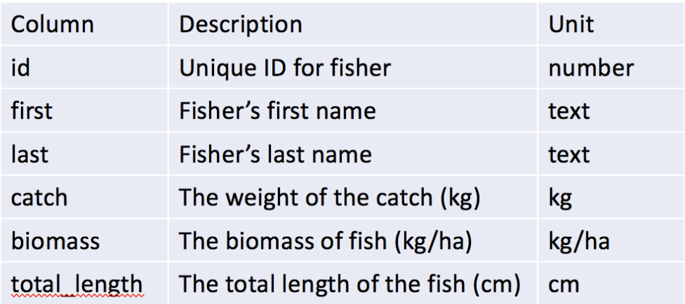
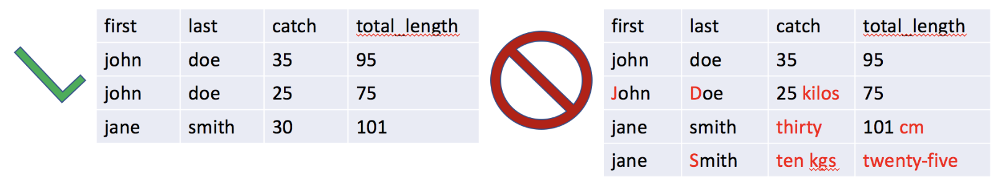

4 Describe data in a metadata file
Your raw flat data files should only include data, no comments. Rather than using complicated spreadsheets, create a metadata document, often called “README”, that includes (at a minimum) what data you are collecting, how and when the data were collected, where the data is stored, and who owns the data. This file should also include a “data dictionary” that describes each variable and associated unit in the data file (see example below). Be as specific as possible; for example, the description for fish length variables should include whether it is fork length, total length, or standard length.

4.1 Use clear and concise descriptive names for data files and variable names
File names are the easiest way to explain the contents of a data file. Capturing the place, time, and content of the data, even in an abbreviated fashion, can be extremely useful. For example, consider naming a fish catch monitoring file “muni_fishcatch_month_year.csv”, replacing “muni”, “month”, and “year” with the appropriate values. Similarly, each column in your data should contain a unique variable and be given a clear but concise name that uses letters, numbers, dashes, dots, or underscores. Lastly, always use plain ASCII text, as certain marks (e.g., accents) or characters (e.g., Chinese or Japanese) are not widely supported.
File and variable names should NOT be overly long or contain spaces or special characters (e.g. &$%@) + YES: filename: muni_fishcatch_month_year.csv* | variables: year; first_name; last.name; TotalLength + NO: filename: November 2007.csv | variables: Start Year; First Name; Total weight (kg); $ Value
4.2 Always use consistent formats for data values and (if necessary) put units in a separate column
When entering data, do not mix text and numeric responses, or include both text and numbers in the same response. Periods are okay to include for numeric responses but avoid commas (commas indicate a new value in a .csv file). For text values, such as a person’s name or location, take care not to change capitalization, spelling, spacing, etc. (e.g. John, john, jon) as this will generate confusion. Consider using identification codes for variables with many possible categories (e.g., local species name, gear type). Units should always be in their own column or absent entirely but explained in the metadata file. Also, do not use color coding, it cannot be interpreted by other software (data in red below are just to demonstrate improper data entries).

When reporting full dates, use standardized formats since date representations vary between the United States and the rest of the world. For example, 01-09-17 will likely be interpreted as January 9th, 2017 in the U.S. but September 1st, 2017 or September 17th, 2001 in other countries. Therefore, always record dates using the international standard of YYYY-MM-DD as prescribed by the International Organization of Standards (ISO) standard ISO 8601 (2004). It is also generally good to have separate columns for month and year.
4.3 Always store an uncorrected original version of the data file and BACK UP YOUR DATA!!!
When you make changes or corrections to the original data file you could easily make a mistake. To avoid compromising your original raw data, always store an unadjusted copy of the data file and do not make any changes or adjustments to this copy (make it “read-only” if possible). Make a duplicate file if corrections or adjustments are required and be sure to document what changes were made in the metadata file. Lastly, ALWAYS BACK UP YOUR DATA by keeping at least three copies of the file in different locations (e.g., desktop, external hard drive, the cloud).